TEMA 09
Disposición de los elementos HTML. CSS3
Material de estudio organizado a partir del PDF correspondiente. Se conserva el contenido textual del documento y se distribuye por páginas para facilitar su consulta.
Página 1
Disposición de los elementos HTML. CSS3
Página 2
1. Introducción y contextualización práctica
3
2. Disposición de los elementos
4
2.1. Ejemplo de disposición de los elementos
5
3. Posicionamiento flotante
5
4. Caso práctico 1: “Menú horizontal”
6
5. Propiedades CSS3
7
5.1. Bordes redondeados
8
5.2. Sombras
8
5.3. Opacidad
5.4. Gradientes
5.5. Fuentes web
5.6. Multicolumnas
10
5.7. Transformaciones , transiciones y animaciones
10
5.8. Ejemplo propiedades CSS3
11
6. Caso práctico 2: “Viajes más frecuentes”
12
7. Resumen y resolución del caso práctico de la unidad
13
8. Webgrafía
14 cualquier medio o procedimiento, incluidos la reprografía y el tratamiento informático.
Página 3
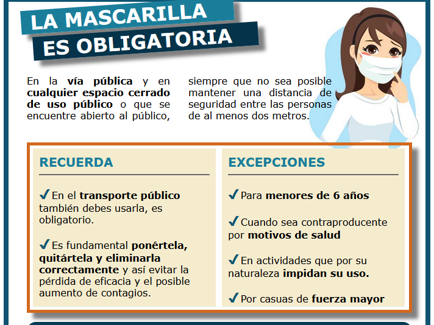
1. Introducción y contextualización práctica
En temas anteriores hemos detallado la sintaxis CSS. También hemos visto los diferentes selectores y las propiedades más importantes que se pueden utilizar en las reglas CSS. En este tema trataremos el último bloque de propiedades relacionado con la manera en la que podemos ubicar los párrafos, imágenes, o tablas, pero sin seguir la colocación por defecto que tienen estos elementos. Las propiedades CSS3 complementan las propiedades básicas de versiones anteriores y dotan, asimismo, de una mayor versatilidad a las páginas web. Planteamiento del caso práctico de la unidad. Alberto está muy preocupado por la situación del Covid-19 y quiere incluir un banner con información sobre el uso de la mascarilla en la web de la empresa WebMalagaDesign. Escucha el siguiente audio donde planteamos la contextualización práctica de este tema. Encontrarás su resolución en el apartado «Resumen y resolución del caso práctico de la unidad». Conocer los diferentes métodos para posicionar elementos HTML en la página web. Conocer algunas propiedades CSS3. https://bit.ly/31DpfQk
Página 4
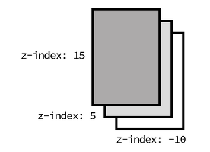
2. Disposición de los elementos
Uno de los aspectos fundamentales de CSS es la colocación de los elementos HTML en la página. Como hemos visto en temas anteriores, los elementos se pueden dividir en elementos en línea y elementos en bloque. Por defecto, los elementos en línea aparecerán de izquierda a derecha, mientas que los elementos en bloque se visualizarán de arriba abajo. La propiedad position, por su parte, nos permitirá cambiar la posición de los elementos HTML a lo largo de la página.
Los valores que puede tener esta propiedad son:
• static: utiliza el orden por defecto.
• relative: se puede desplazar el elemento respecto a su posición estática.
• absolute: se puede desplazar el elemento respecto a la posición del contenedor padre.
• fixed: se comporta como absolute, pero si hacemos scroll en la página, el elemento permanece fijo. Este tipo
de valor es muy útil para fijar un menú en la parte superior de la página. En el siguiente enlace puedes practicar los diferentes valores que tiene position. Cuando indicamos un posicionamiento diferente al estático debemos especificar qué desplazamiento queremos aplicar. Para ello, contamos con estas propiedades que pueden tener valores positivos o negativos. Cuando tenemos varios elementos apilados, con la propiedad z-index podemos indicar en qué orden se deben mostrar. Así, el elemento que tenga un valor en z-index mayor, aparecerá en la parte superior del apilamiento. Propiedad Significado Valores top Espacio en la parte superior del elemento auto | tamaño bottom Espacio en la parte inferior del elemento auto | tamaño left Espacio en la parte izquierda del elemento auto | tamaño right Espacio en la parte derecha del elemento auto | tamaño z-index Se indica el orden en el apilamiento auto | orden Tabla 1. Posicionamiento del elemento HTML. Audio 1. “Position sticky” https://bit.ly/2VDJ06y
Página 5
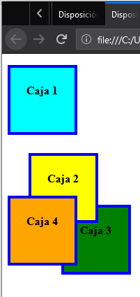
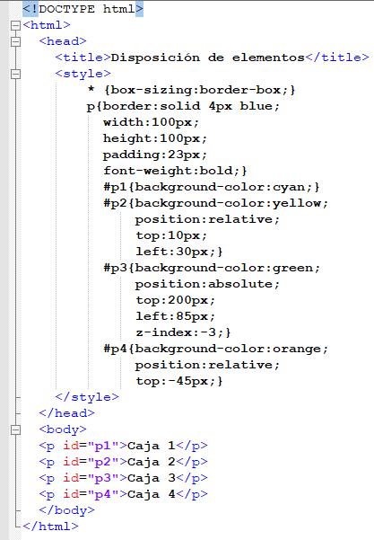
2.1. Ejemplo de disposición de los elementos
En el siguiente ejemplo, se muestra la disposición de diferentes elementos mediante el uso de las propiedades que hemos visto. Cabe destacar que, en el Código 1, como al párrafo le hemos indicado un z-index de ‘-3’, aparecerá después de las demás cajas, puesto que las cajas, por defecto, tienen asociado un z-index positivo acorde al orden de aparición en la página.
3. Posicionamiento flotante
Existe un tipo de posicionamiento especial que nos va a permitir sacar los elementos HTML del flujo normal, consiguiendo, además, que el resto de elementos que lo rodean fluyan a izquierda o derecha. Para ello se utilizan las propiedades float y clear. Propiedad Significado Valores float El elemento flota a la izquierda o a la derecha none | left | right clear No permite que los elementos floten en la orientación que le indiquemos none | left | right | both Tabla 2. Posicionamiento flotante. propiedad position. Código 1. Uso de la propiedad position.
Página 6
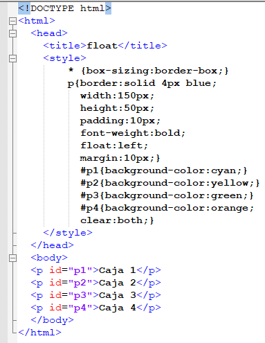
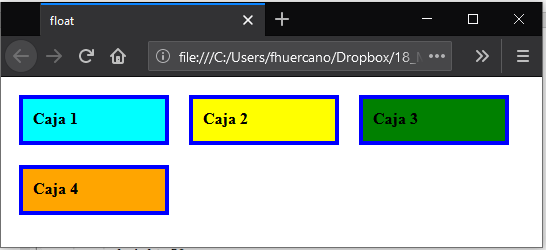
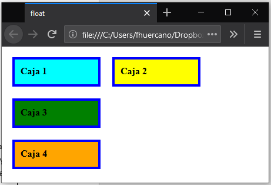
En el siguiente ejemplo veremos mejor su funcionamiento:
• Figura 4. Las cajas se alinean todas a la izquierda(float:left), hasta que llega a la caja 4, que no permite que los
elementos fluyan a su alrededor(clear:both) y, por eso, pasa a formar parte de otra línea.
• Figura 5. Las cajas se colocarán a la derecha siempre que haya espacio. Al reducir la ventana, como la caja 3
ya no cabe a la derecha de la caja 2, pasa a otra línea.
4. Caso práctico 1: “Menú horizontal”
Planteamiento: Alberto está trabajando en el diseño de una web y necesita crear un menú horizontal. Nudo: se lo comenta a Gloria y ella le dice que anteriormente ha creado menús verticales, pero no horizontales. Alberto le comenta que es muy similar y que solo debe fijarse en usar adecuadamente la propiedad float. Alberto le indica a Gloria que el menú debe tener un fondo en negro y que, cuando pase el cursor por encima de las opciones, se ponga un fondo en color chocolate.
Las opciones que se deben de mostrar son:
• Inicio
• Novedades
Vídeo 1. “Uso de float y clear” https://bit.ly/2YhYE8Z Código 2. Uso de float y clear. Fig.4. Posicionamiento flotante Fig.4. Posicionamiento flotante cuando se hace la ventana más pequeña.
Página 7
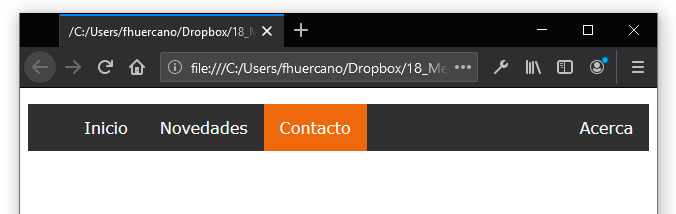
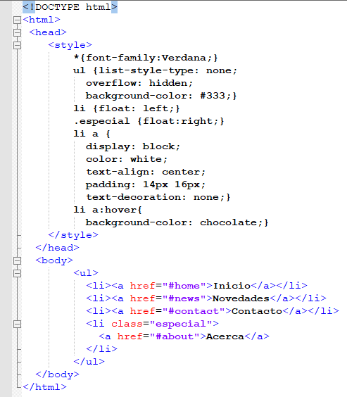
• Contacto
• Acerca
La opción de ‘Acerca’ debe de estar alineada a la izquierda.
Desenlace:
5. Propiedades CSS3
A lo largo de los apartados anteriores, hemos detallado propiedades que, en su mayoría, pertenecen a la versión 2.1, aunque hemos descrito algunas de CSS3, como la selección de elementos por atributos o descendientes n-esimos con la pseudoclase nth-child(). La versión 3 de CSS dispone de nuevas propiedades que aumentan la funcionalidad de la web sin tener que acudir a complementos externos. La versión 3 se revisa continuamente y, para saber si nuestro navegador soporta las nuevas propiedades, se puede acceder al siguiente enlace.
Entre las novedades principales podemos destacar las siguientes:
• Colocar varias imágenes de fondo
• Esquinas redondeadas
Código 3. Menú horizontal con el uso de float.
Página 8
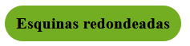
• Bordes con imágenes
• Sombras
• Transparencias
• Varias columnas en el contenido
• Nuevos posicionamientos de cajas
• Nuevos selectores
• Transformaciones, transiciones y animaciones
En este apartado vamos a describir algunas de estas novedades, pero para una relación detallada de todas ellas, puedes acceder al siguiente enlace.
5.1. Bordes redondeados
Permite crear esquinas redondeadas. Se puede aplicar a todos los bordes o indicar solo los que nos interesen.
Las propiedades de cada esquina son:
• border-top-left-radius: esquina superior izquierda.
• border-top-right-radius: esquina superior derecha.
• border-bottom-left-radius: esquina inferior izquierda.
• border-bottom-right-radius: esquina inferior derecha.
Si lo queremos aplicar a todas las esquinas por igual, podemos utilizar la versión reducida border-radius. El nivel de redondeo se indica en pixeles.
5.2. Sombras
Permite aplicar el efecto de sombra a elementos HTML, incluidos los textos. La propiedad que hay que utilizar es
box-shadow y hay que indicarle 5 valores:
• Separación horizontal de la sombra
• Separación vertical de la sombra
• Radio del desenfoque
• Distancia de propagación
• Color
Si queremos aplicar sombras a los textos hay que usar la propiedad text-shadow y, excepto el radio del desenfoque, hay que indicar los mismos valores que con box-shadow. Fig.7. Sombra. Fig.6. Bordes redondeados.
Página 9
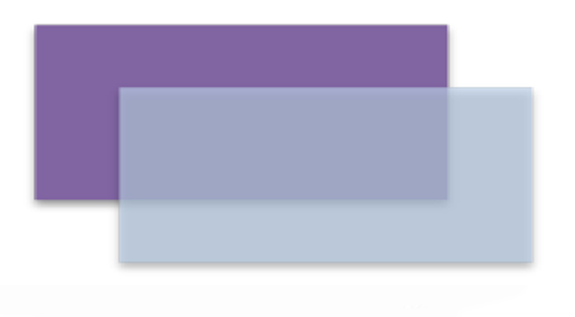
5.3. Opacidad
Gracias a la propiedad opacity podemos indicar el grado de opacidad de los elementos de la página web. Esta propiedad abarca los valores desde la total transparencia (0) hasta la total opacidad (1).
5.4. Gradientes
Permite crear gradientes de colores. Los gradientes pueden ser lineales o radiales, y se indican con las propiedades linear-gradient y radial-gradient, respectivamente.
Los parámetros que debemos indicar con la propiedad linear-gradient son:
• Dirección: to right | to bottom right | ….
• Color de inicio y color final.
Y los parámetros de radial-gradient son:
• Figura a mostrar: ellipse | circle
• Tamaño: closest-side | closet-corner
• Posición: la posición de inicio
• Color de inicio y color final.
5.5. Fuentes web
Con CSS3 tenemos la posibilidad de utilizar fuentes nuevas para utilizarlas en los documentos web. Para ello se hace
uso de la regla @font-face. La sintaxis sería la siguiente:
En la cual:
• font-family: se indica el nombre de la fuente que luego se usará en reglas CSS.
• src: URL donde se encuentra la fuente. Puede estar en local o ser una dirección web.
• Font-weight: grosor de la fuente (por ejemplo, normal, negrita, etc).
• Font-style: estilo de la fuente, por ejemplo, itálica.
@font-face{ font-family: <nombre de la fuente> src: <origen> [font-weight:<peso>] [font-style:<estilo>]} Fig.8. Opacidad de un div sobre otro.
Página 10
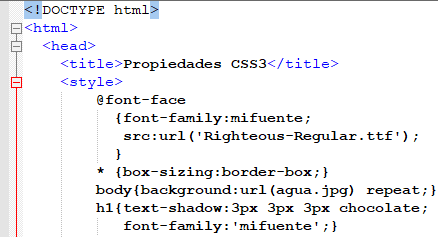
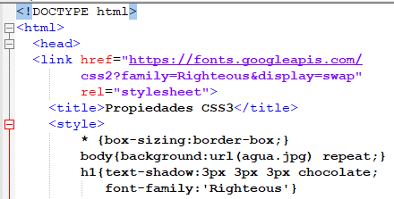
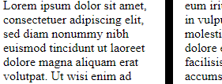
Las fuentes se pueden descargar de Google Fonts. Si no queremos descargar la fuente y optamos por indicar la dirección URL de Google Fonts, tendríamos que acceder al apartado Embed de la fuente elegida de Google Fonts y copiar el enlace que tendremos que incluir en el código de la página web que estamos desarrollando. Para aplicar esa fuente a un elemento HTML tendría que indicarse con la propiedad font-family. En las siguientes figuras se muestran códigos de ejemplo, con descarga y sin ella. En este caso, se enlaza con la fuente Righteous, que es la que se utilizará en todos los h1 de la página.
5.6. Multicolumnas
En CSS3 podamos crear columnas con el texto que tengamos en un párrafo o en un div. Para ello disponemos de las
siguientes propiedades:
• column-count: indica el número de columnas.
• column-gap: indica el hueco entre columnas.
• column-rule: indica el ancho, estilo y color de la línea que separa las
columnas. Para una referencia completa, puedes acceder al siguiente enlace.
5.7. Transformaciones , transiciones y animaciones
Con CSS3 podemos crear transformaciones en los elementos HTML. Para ello se utiliza la propiedad transform. El valor que tendrá esa propiedad será el método de transformación que realicemos. Entre los más importantes
tenemos los siguientes:
• translate(x,y): mueve el elemento ‘x’ pixeles a la derecha e ‘y’ pixeles abajo. Si los valores de x e y son
negativos, el movimiento será a la izquierda y arriba, respectivamente.
• rotate(x): rota el elemento x grados. Por ejemplo, 20deg.
• scale(x,y): Escala ‘x’ veces el ancho e ‘y’ veces el alto.
Código 5. Uso de la fuente Righteous con descarga. Código 4. Uso de la fuente Righteous sin descarga.
Página 11
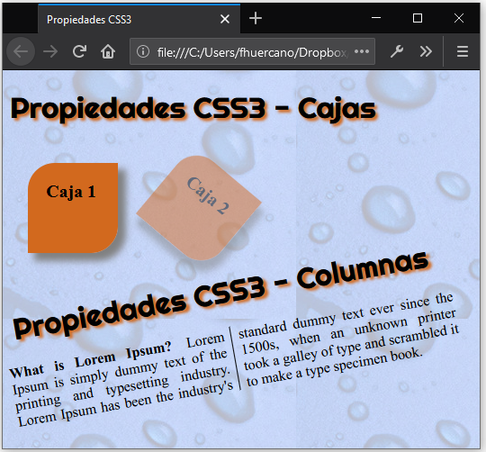
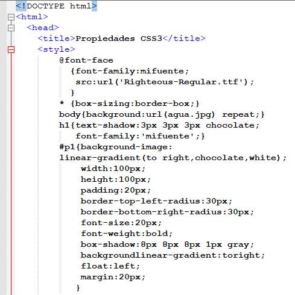
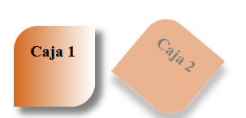
Existen otras maneras de crear efectos de movimiento, mediante las transiciones y las animaciones ,por ejemplo, que puedes consultar en los enlaces indicados.
5.8. Ejemplo propiedades CSS3
Veamos a continuación un ejemplo en el que el fondo es una imagen de agua que se repite. Es muy habitual usar
patrones y repetirlos para conseguir llenar el fondo:
Parte del código asociado se muestra a continuación:
El código completo lo puedes ver en el siguiente enlace. Código 6. Código asociado al ejemplo. Vídeo 2. “Propiedades CSS3” https://bit.ly/2NQ6Qr6
Página 12
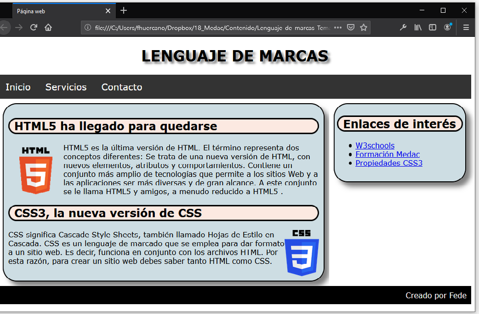
6. Caso práctico 2: “Viajes más frecuentes”
Planteamiento: A la empresa de Alberto y Gloria le llegan muy a menudo peticiones de diseños web con características similares. Nudo: Alberto plantea crear una plantilla que sirva de punto de partida para realizar los diseños pedidos. Esta plantilla debe tener la siguiente estructura.
• Estructura HTML5 con todas las secciones incluidas.
• Un título con sombra.
• Un menú horizontal con efecto hover.
• Sección central con 2 artículos y con sombra.
• Cada artículo debe llevar una imagen alineada a la izquierda en el primer artículo y a la derecha en el segundo.
Se ha de utilizar la propiedad float.
• Sección lateral con enlaces de interés y sombra.
• Footer indicando el autor.
Desenlace: Puedes ver cómo se visualizaría la solución en el navegador en la siguiente figura, y el código que la implementa, en el anexo del tema. Solución: Anexo del tema
Página 13
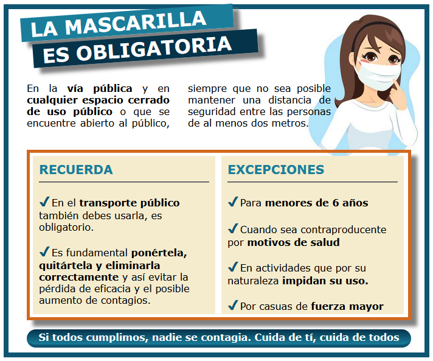
7. Resumen y resolución del caso práctico de la unidad
En este tema, hemos estudiado las posibilidades que ofrece CSS para poder sacar del flujo normal los elementos HTML de nuestra página web. Esos elementos pueden tener una posición fija, relativa y, también, pueden flotar con respecto a otras cajas. Las propiedades CSS3 que hemos explicado en el tema son algunas de las que existen en esta versión y que permiten ampliar las propiedades de versiones anteriores. Entre las últimas novedades cabe destacar las transformaciones, las transiciones y las animaciones. Resolución del caso práctico de la unidad A continuación, se muestra el resultado del banner diseñado por Alberto y Gloria sobre el uso de la mascarilla. Solución: Anexo del tema
Página 14
8. Webgrafía
Open Source Web Design: sitio web que ofrece cientos de plantillas gratuitas con posibilidad de utilizarlas libremente en aplicaciones personales y comerciales. Tutorial de CSS: escuela online de CSS. CSS: referencia CSS.